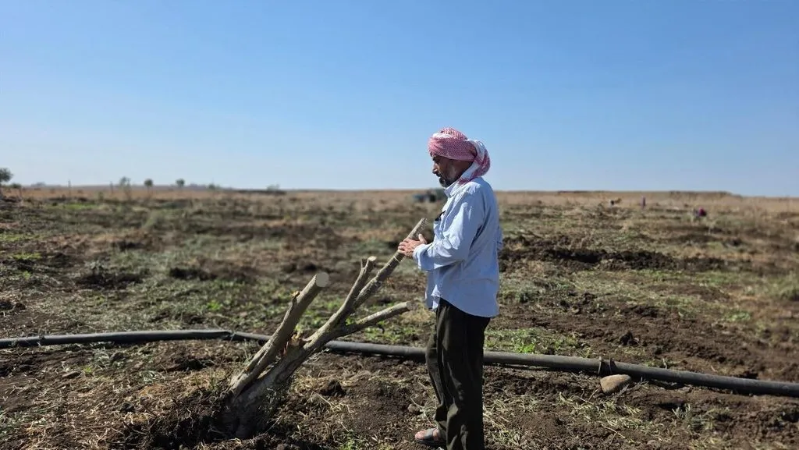
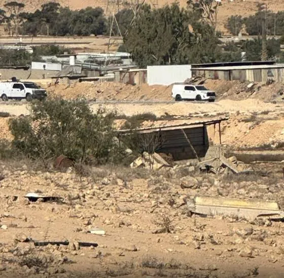
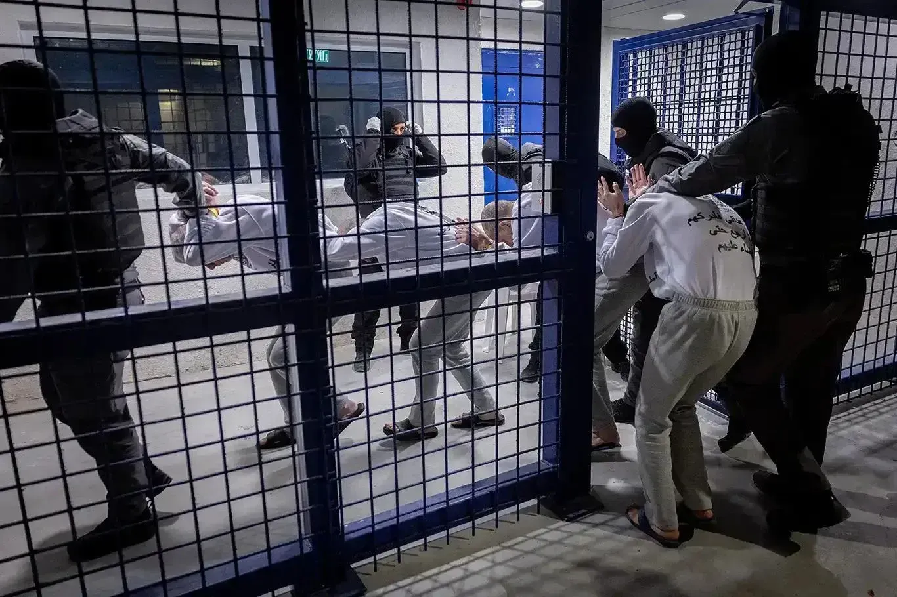
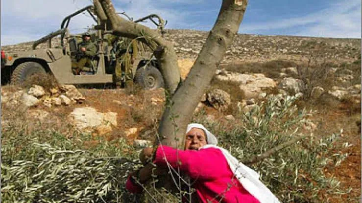
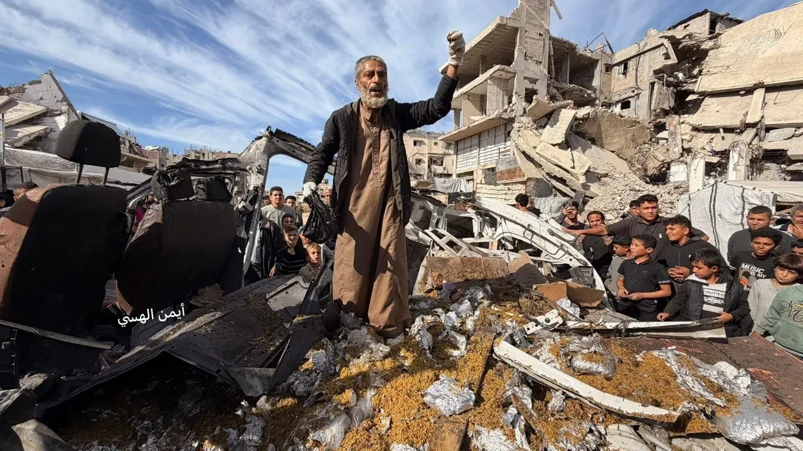
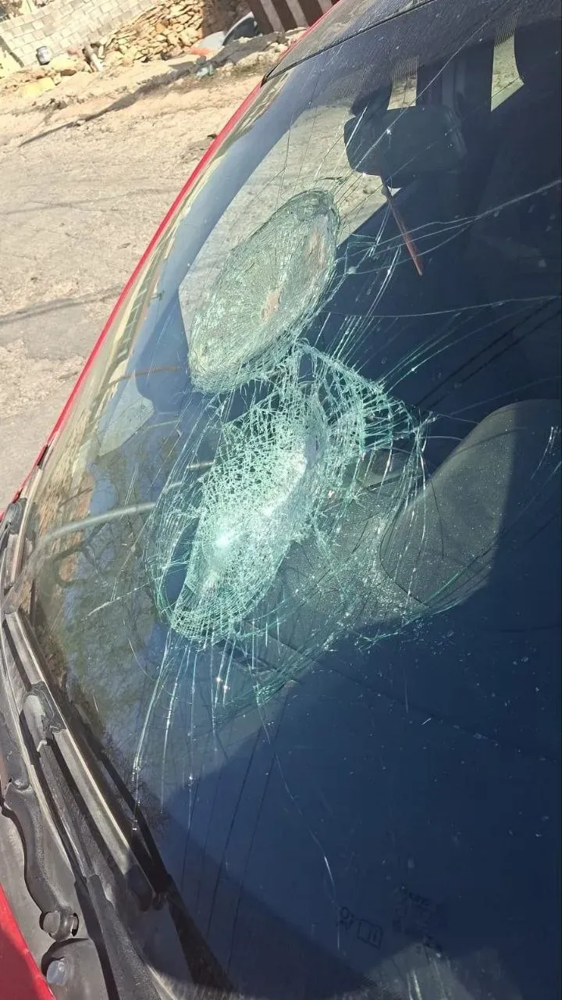
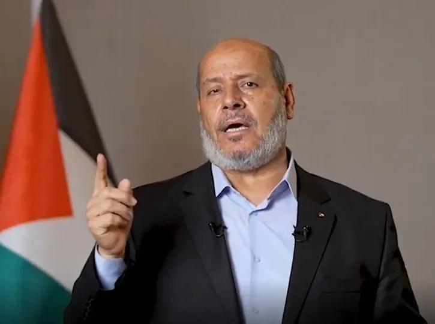
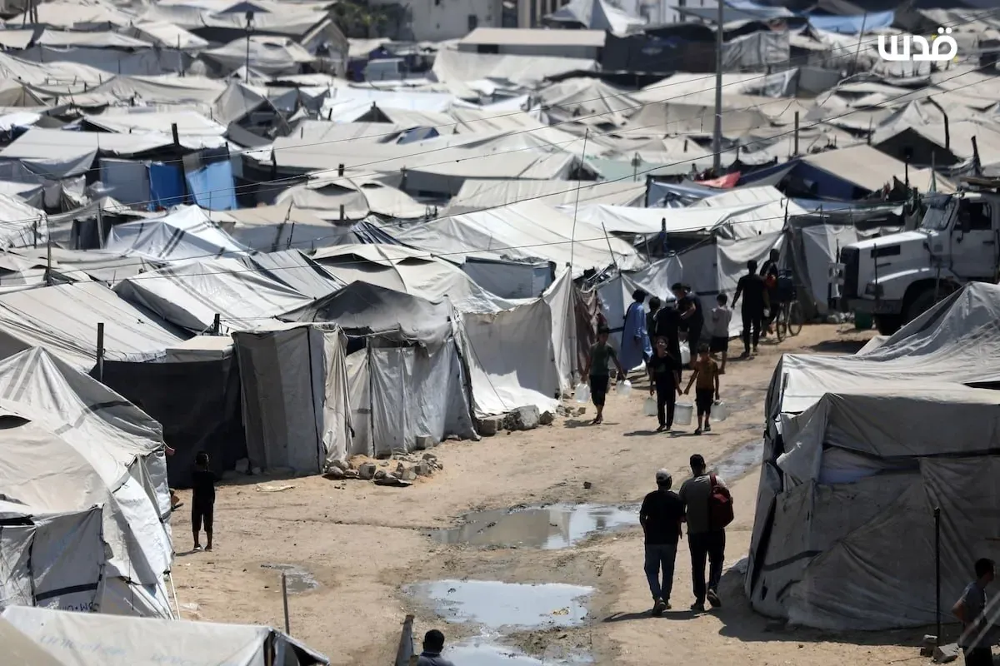
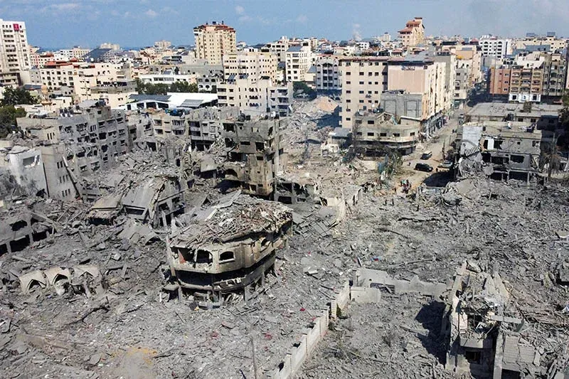

رئيس التحرير
هيئة تحرير صدى فلسطين
تُنشر أخبار صدى باسم رئيس التحرير، بعد التحقق منها عبر شبكة مصادر ميدانية ومتابعة مستمرة لوكالات الأنباء. هدفنا نقل الحقيقة كما هي، بلا تزييف ولا تجميل.
38خبراً في هذه النسخة
info@sadaps.net
- 11الضفة الغربية
- 4القدس
- 6الداخل
- 10قطاع غزة
- 7فلسطين
كل الأخبار



















